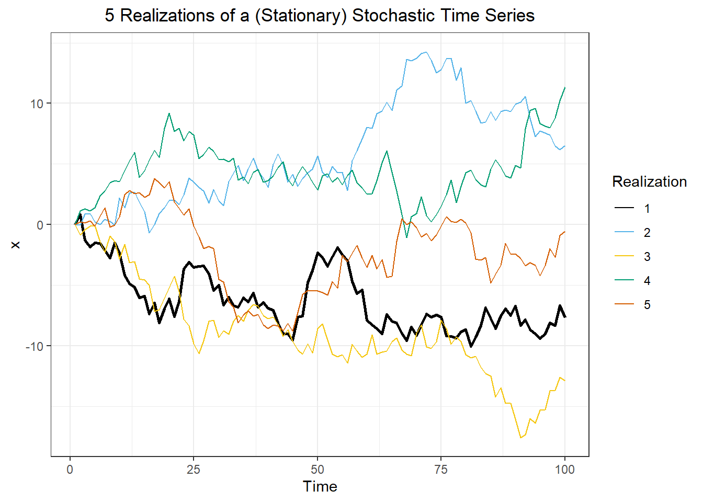

Use technical language to describe the main features of time series data
- Define time series analysis
- Define time series
- Define sampling interval
- Define serial dependence or autocorrelation
- Define a time series trend
- Define seasonal variation
- Define cycle
- Differentiate between deterministic and stochastic trends
Use technical language to describe the main features of time series data
- Define time series analysis
- Define time series
- Define sampling interval
- Define serial dependence or autocorrelation
- Define a time series trend
- Define seasonal variation
- Define cycle
- Differentiate between deterministic and stochastic trends
Decompose time series into trends, seasonal variation, and residuals
- Describe additive decomposition
- Describe multiplicative decomposition
- Define moving average of a time series
- Estimate trend component using moving averages
- Obtain residuals as difference between original series and trend + seasonal estimates
Use R to describe key features of time series data
- Import CSV data and convert to tsibble format
- Obtain the five number summary of a "ts" object
- Remove seasonal variation of a time series
- Create a seasonal summmary of a time series
Plot time series data to visualize trends, seasonal patterns, and potential outliers
- Plot a "ts" object
- Combine multiple "ts" objects into a single plot using cbind()
- Obtain a time series from a "ts" object using time()
- Make boxplots to examine distribution of values within each season
Understand the purpose and limitations of forecasting
- Define forecasting
- Define lead time
- Differentiate causation from correlation
Explain the key theoretical concepts of time series decomposition
- Define smoothing
- Explain a centered moving average
- Explain the differences in additive vs multiplicative estimators of seasonal variation
- Explain how to remove seasonal variation using an estimate for seasonal component of a time series
Preparation
Read Sections 1.1-1.4
Learning Journal Exchange (15 mins)
Review another student’s journal
What would you add to your learning journal after reading another student’s?
What would you recommend the other student add to their learning journal?
Sign the Learning Journal review sheet for your peer
Vocabulary and nomenclature Activity (15 mins)
Match the definitions on the left with the terms on the right.
A figure with time on the horizontal axis and the value of a random variable on the vertical axis
A systematic change in a time series that does not appear to be periodic
Repeated pattern within each year (or any other time period)
Repeated pattern that does not correspond to some fixed natural period
Observations in which values are related to lagged observations of the same
Random trend that does not follow a discernible or predictable pattern
Can be modeled with mathematical functions, facilitating the long-term prediction of the behavior
Number of observations of a time series
Discrete observations of a time series, taken at times \(1, 2, \ldots, n\).
Lead time
Forecast made at time \(t\) for a future value \(k\) time units in the future
Additive decomposition
Additive decomposition model for \(\log(x_t)\)
Multiplicative model
Centered moving average
Estimate of monthly additive effect
Estimate of monthly multipliciative effect
Seasonally adjusted mean for the month corresponding to time \(t\)
Seasonal adjusted series (additive seasonal effect)
Seasonal adjusted series (additive seasonal effect)
The trend as observed at time \(t\)
The seasonal effect, as observed at time \(t\)
The error term (a sequence of correlated random variables with mean zero), as observed at time \(t\)
POSSIBLY: DEMONSTRATE THAT TWO UNRELATED TIME SERIES WILL BE CORRELATED IF THEY BOTH CONTAIN A TREND———-
Hands-on Exercise: Exploring a time series in R (Google Trends: Chocolate) (20 min)
Caution
We need to add a link to the chocolate search trends data here, together with the code to analyze them
Do the following.
Import the chocolate search data and convert to tsibble format
Compute summary statistics for this time series data
Aggregate time series data in a tsibble to the annual level to remove seasonal variation and visualize the trend.
What do you observe in the trend? What do you suspect is causing this trend?
Create a box plot of seasonal values, with one box plot per month. What do you observe? Which months tend to have more searches? Can you provide an explanation for this?
Demonstrate decomposition of the chocolate search data; show trend, seasonality, and residual
How does the trend and seasonality compare to your observations above?
What do you observe in the residual? Are there any unusual spikes? Use Google to try to determine what may have caused the usual spikes.
Hands-on Exercise: Exploring simulated time series data (5 min)
Caution
Insert a simulation of a time series that can be revised to allow students to see effects of inputs on the TS. (Here is an idea below.)
# Set random seed for reproducibilityset.seed(1234) num_years <-10n <-12* num_yearssigma <- .75a <-0.05b <- .5c <- .9x <-rep(0,n)e <-rnorm(n, 0, sigma)time_seq <-seq(1,n)# Get dateyear_seq <- lubridate::year(today()) - num_years + (time_seq -1) %/%12month_seq <- (time_seq -1) %%12+1date_seq <-ymd(paste0(year_seq,"-",month_seq,"-01"))# Get datafor (i in2:n) { x[i] <- a * i + b *sin(i /12*2* pi *3) + c *cos(i /12*2* pi *2) + e[i]}x_df <-data.frame(x = x)start_year <- lubridate::year(today()) - num_yearsstart_date <- lubridate::ymd(paste0(start_year,"-01-01"))# start_date <- lubridate::ymd("1958-01-01")date_seq <-seq(start_date, start_date +months(nrow(x_df)-1),by ="1 months")x_df_ts <- x_df |>mutate(date = date_seq,month = tsibble::yearmonth(date)) |>as_tsibble(index = month)x_decompose <- x_df_ts |>model(feasts::classical_decomposition(x,type ="add")) |>components()autoplot(x_decompose)

Demonstrate decomposition of simulated ts data in Quarto notebook; show trend, seasonality, and residual
Make changes to the simulated data and observe the effect on the plots